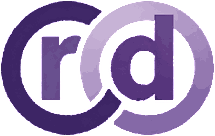

望
SEE
Observe how it moves.
Use vision to inspect posture, gait symmetry, alignment and visible assembly abnormalities.
POSE · GAIT · ALIGNMENT · VISION


RobodiagFrom production to field operation, Robodiag continuously understands your robot’s condition, detects abnormalities, identifies root causes, and helps problems get found and fixed faster.
Robodiag goes beyond passive fault-code reading. It actively excites the robot, observes the response, compares it against healthy baselines, and produces an evidence-backed diagnosis.
Run standardized movements and test sequences designed to expose latent faults.
Capture internal telemetry together with external vision, acoustics and vibration.
Compare a robot with golden units, fleet norms and its own historical behavior.
Turn signal deviations into PASS / FAIL, fault localization and probable causes.
The Observe step is more than reading one sensor. Robodiag collects four kinds of evidence: visual behavior, sound, internal telemetry and physical response.
Use vision to inspect posture, gait symmetry, alignment and visible assembly abnormalities.
Acoustic and vibration signatures can expose friction, impact and abnormal mechanical behavior.
Read joint telemetry, temperatures, currents, logs, fault memory and test history from inside the robot.
Measure force, torque, contact and vibration while the robot runs controlled tests.
The name comes from 望聞問切 — the four diagnostic methods of traditional Chinese medicine, set out in classical Chinese texts more than two thousand years ago: observe the patient, listen to the breath, ask about the symptoms, feel the pulse. Robodiag keeps the same outside-in order — watch how the robot moves, listen to how it sounds, ask what it reports, then measure how it responds.
As robots move from prototypes to products, testing must become repeatable, measurable and traceable.
Create reusable, versioned and auditable robot test procedures.
Execute test procedures beside the robot, even when the cloud does not.
Find where the anomaly is, show the evidence, and suggest probable causes.
Robodiag coordinates the robot, test execution and sensing in one traceable diagnostic workflow.
Every robot leaves the line with a standardized, traceable health record.
Verify modules, assemblies and finished robots using consistent test procedures.
Diagnose robots before replacing parts and reduce unnecessary service effort.
As robots scale from prototypes into products, diagnosis becomes infrastructure. Robodiag is building the test and health layer that makes robots manufacturable, serviceable and trustworthy.
Bring us a robot. We'll help turn your testing into a repeatable, traceable diagnostic workflow.